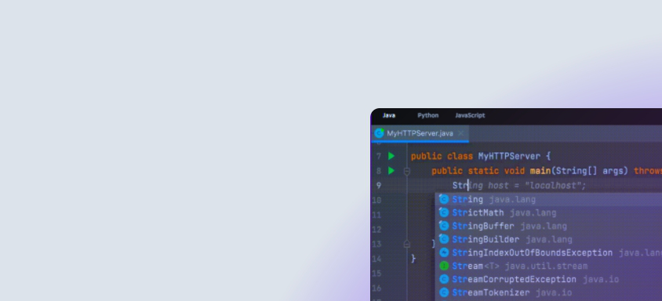

Сделаем платформу лучше — пройди опрос GitVerse
ОбзорДобавитьЗапросыМои задачи
Поиск
/
alensav
Ускоряем написание
и улучшаем качество
вашего кода
ПРОФЕССИОНАЛЬНАЯ
СРЕДА РАЗРАБОТКИ
Desktop версия на базе
JB IDEA/Pycharm
ОБЛАКО ДЛЯ РАЗРАБОТКИ
И ТЕСТИРОВАНИЯ
Подключи бесплатную
виртуальную машину
Как вам GitVerse?
АктивностьВсПнВтСрЧтПтСбДекЯнвФевМарАпрМайИюнИюлАвгСенОктНоя
За выбранный период не было активности
Репозиториев не найдено
Центр заботыПоддержка
Оценить
Политика конфиденциальностиПользовательское соглашениеПолитика использования «cookies»Согласие субъекта персональных данных
2024 ©